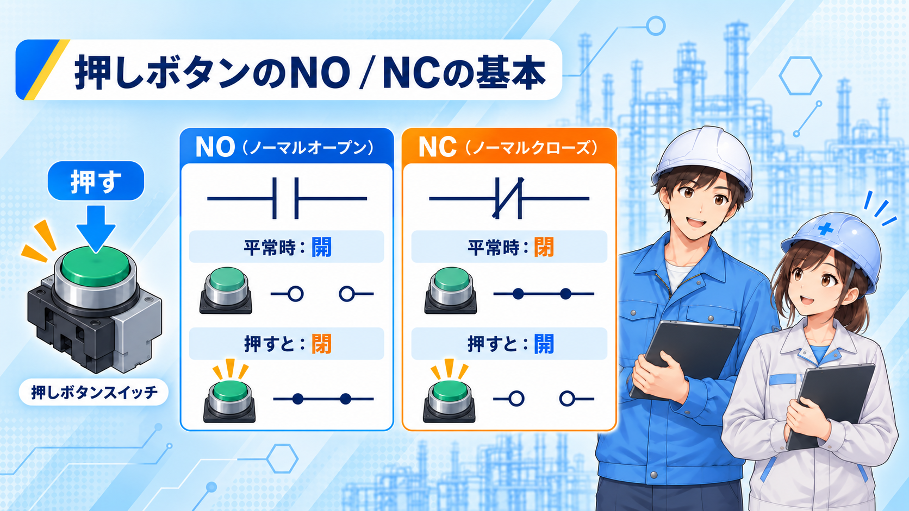
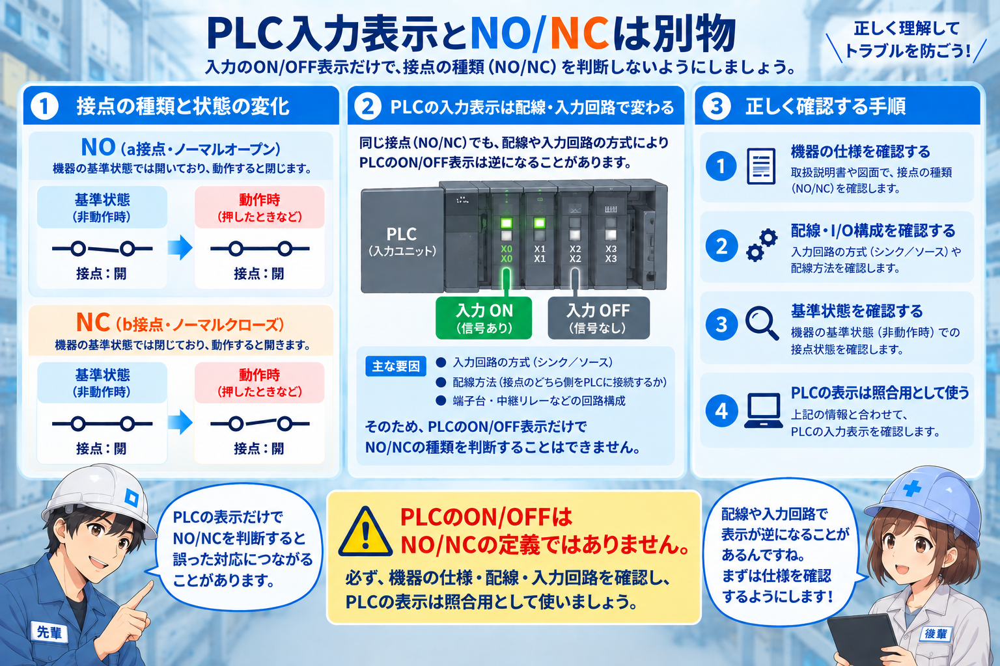

NO / NC とは？
NO / NC は、接点の状態を表す英語表記です。 NO は Normally Open、NC は Normally Closed の略です。
つまり、通常時に開いているか、閉じているか をそのまま表しています。 ここでいう通常時は、ボタンを押していない、コイルが入っていない、機器が動作していない状態です。

まずは基本の意味
NO
NO は Normally Open です。通常時は開で、押したり動作したりすると閉になります。
- 普段は電気が流れない
- 動作した時に電気が流れる
- 「普段OFF → 動作でON」と考えると分かりやすい
NC
NC は Normally Closed です。通常時は閉で、押したり動作したりすると開になります。
- 普段は電気が流れている
- 動作した時に電気が切れる
- 「普段ON → 動作でOFF」と考えると分かりやすい
現場でよくある使い方
現場では、NO / NC は押しボタン、リレー・電磁接触器、PLC入力の見方などでよく出てきます。 名前だけで覚えるよりも、実際にどこで見るかを知っておくとかなり追いやすくなります。

1. 押しボタン
押しボタンでは、スタート側に NO、ストップ側に NC が使われることがあります。 スタートは押した時に信号を入れたいので NO が分かりやすく、ストップは押した時に切れる考え方になるので NC が使われることがあります。
2. リレー・電磁接触器
リレーや電磁接触器では、接点に NO / NC の表記が付いていることがあります。 コイルがOFFの時は NO が開、NC が閉。コイルがONになると、NO が閉、NC が開に切り替わります。
3. PLC入力の見方
現場では、名称だけでなく押した時にPLC入力がどう変わるかを見るのが大事です。 たとえば、押したら入力がONになるなら NO っぽく、押したら入力がOFFになるなら NC っぽいと考えると整理しやすいです。
PLC入力ではどう見る？
PLCで確認する時は、接点の名前だけを追うよりも、普段の状態 → 操作した時の変化 → 回路と合っているか の3つをセットで見るのが基本です。
NOっぽい見方
- 普段は入力OFF
- 押す / 動作する と入力ON
- 例：スタート側、信号を入れたい入力
NCっぽい見方
- 普段は入力ON
- 押す / 動作する と入力OFF
- 例：停止側、監視側で使うことがある
a接点・b接点との関係
NO / NC は、a接点・b接点とかなり近い考え方です。 ざっくり整理すると、次のように考えて大きくは問題ありません。
NO ≒ a接点
通常開で、動作すると閉じる考え方です。
NC ≒ b接点
通常閉で、動作すると開く考え方です。
ただ、最初は無理に全部一気に覚えなくても大丈夫です。 まずは NO / NC 単体で意味が分かること を優先した方が整理しやすいです。
よくある混乱
- NO = ON ではない → NO は通常開です
- NC = 危ない接点ではない → 停止や監視でかなり重要です
- 英語表記だけで止まらない → 通常時と動作時の変化で見る
まとめ
NO / NC は、制御を触り始めた時にかなりよく出てくる基本表記です。 まずは次の2つを押さえるのがおすすめです。
NO
通常開
NC
通常閉
そのあとに、押した時どう変わるか、PLC入力がどう変わるか、a接点・b接点とどうつながるかを見ていくとかなり追いやすくなります。
次に読むとつながりやすい記事
NO / NC の次は、a接点・b接点と行き来しながら読むとかなり理解しやすくなります。 すでにある記事なら、入力と出力、自己保持回路、リミットスイッチも相性が良いです。